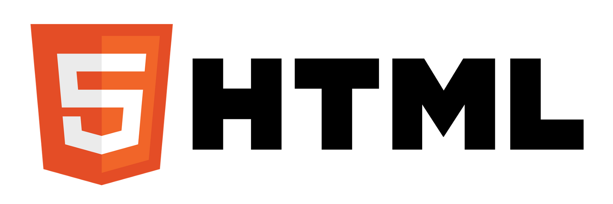
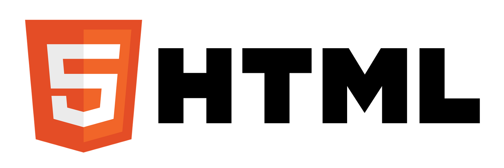
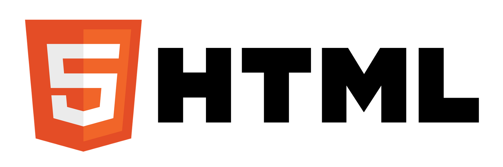

Compétences
J'ai été formé pour être compétent dans plusieurs domaines relatant au multimédia et à l'informatique :
-Python
-MySQL
-HTML/CSS
-PHP
-Adobe Photoshop / Illustrator / Premiere
 

Je m'appelle Anthony Muraccioli. Je suis né le 20 Janvier 2003 en Haute-Corse.
Depuis mes 5 ans, je me suis habitué et pris de passion pour l'univers de la technologie, notamment celui d'Internet.
C'est pour cela qu'aujourd'hui, j'ai décidé que ma vie tournera autour de cela, notamment grâce au développement
de sites web et à la maintenance physique d'appareils électroniques.
Bienvenue, apprenons donc à nous connaître!
J'ai été formé pour être compétent dans plusieurs domaines relatant au multimédia et à l'informatique :
-Python
-MySQL
-HTML/CSS
-PHP
-Adobe Photoshop / Illustrator / Premiere


J'ai développé en binôme, lors de mes années de Lycée, un jeu simple codé en langage Python nommé "Descension."
Il s'agit d'un jeu ressemblant aux jeux type "Text Adventure" que l'on pouvait retrouver sur DOS il y a plusieurs années.
Le jeu suit une courte trame scénaristique dans laquelle un protagoniste nommé par vous décède au début de l'histoire, et doit s'échapper de l'Au-Délà
pour revenir à la vie et retrouver sa famille. Il est possible d'écrire différentes commandes à l'aide d'une ligne de texte afin de combattre des ennemis
similairement à un RPG.
Mon parcours professionel relatant au multimédia et à l'informatique à commencé au Lycée. J'ai validé deux années de spécialité NSI (Numérique et sciences Informatiques)
lors de mon baccalauréat, pour me diriger vers l'Institut Universitaire Technologique de Corte, ou j'ai suivi une formation MMI (Métiers du Multimédia et de l'Internet.)
Cette formation m'a permis de devenir très polyvalent dans mes capacités : Communication, Graphisme, Design & Analyse Web, et Audiovisuel.
Cela me permet aujourd'hui d'avoir entièrement confiance en mes compétences.
Vous pouvez me contacter sur les réseaux sociaux ci-dessous, où bien m'envoyer un mail directement grâce au formulaire à droite. Je répondrais à votre demande dans les plus brefs délais.